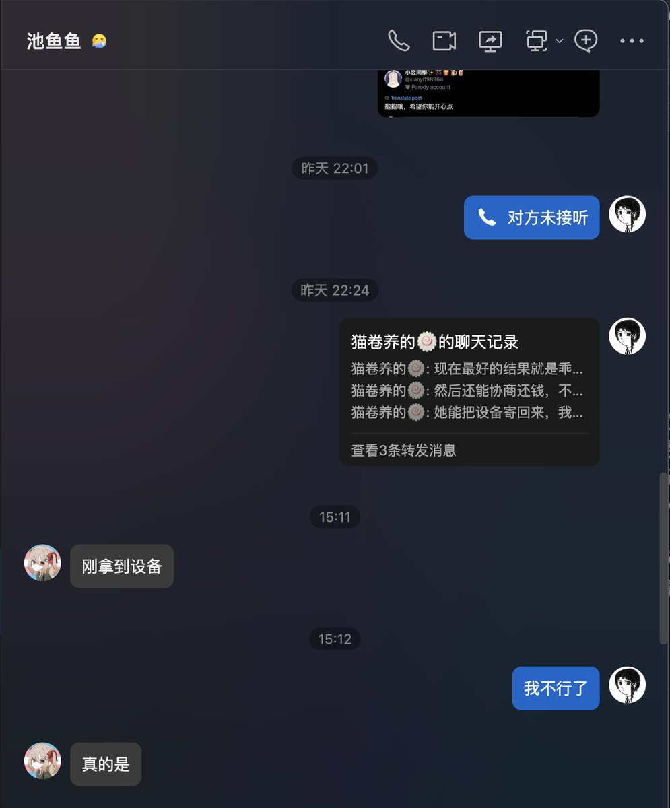

祐穂・H 「暂退网」
@HYuusui1999
@LumiCatRoll @hagishigure 她要是能回我消息倒好啊；
但是我昨日说过她没回复。

Lumi & 猫卷 Co. (日雌泰补诺
@LumiCatRoll
@HYuusui1999 @hagishigure 我直接挂人就是挂骗子嘛，我懒得跟她们那边的人扯皮咯。就算我等不及回复直接把她挂了又咋个咯？她是骗子还不能被挂？难道我还要跟她商量好，征得她同意才挂得？她是受害者还是我们是受害者？扯皮扯筋能把局面扭转，但转账同消息记录不会哄人，人在做天在看，谁对谁错心里头门儿清。我成都那边人只联系